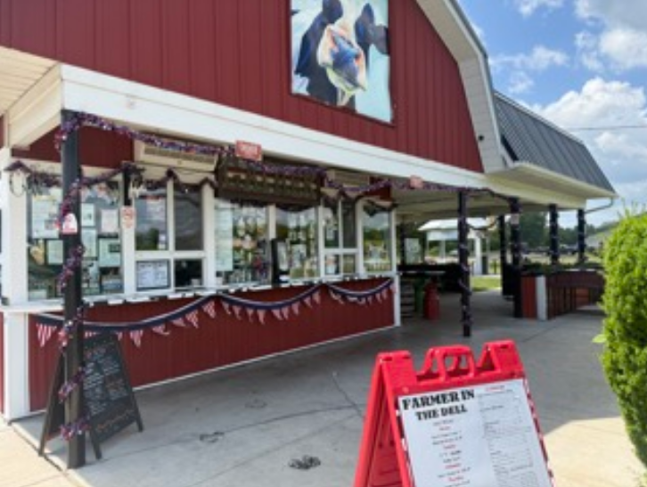
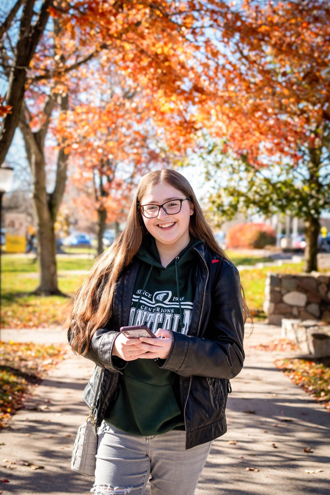

01 • Professional Experience
Farmer in the Dell
Developing leadership, financial accountability, operational management, and creative communication through four seasons of employment at a local ice cream business.
Explore Experience
02 • Professional Experience
Subway — Central Michigan University
Continuing to develop professional communication, customer service, and leadership skills through on-campus employment.
Explore Experience

03 • Academic Achievement
Early College Experience
An early start to higher education through academic dedication, personal initiative, and college community involvement.
Explore Experience
Upcoming • Summer 2027
04 • International Learning
United Kingdom Study Abroad
Exploring international business culture, professional communication, and global perspectives through an upcoming faculty-led study abroad experience.
Explore Experience
05 • Looking Ahead
Professional Goals & Aspirations
As an Accounting major and Information Systems minor, I am committed to continuous learning, professional growth, and building a strong foundation for my future career.
Explore My Goals